I design and build complete systems across hardware, software, and everything in between. My work covers autonomous robotics with computer vision and LiDAR, industrial predictive maintenance with custom PCBs and ML, speech and handwriting recognition platforms, PLC-based factory automation, IoT devices with custom circuit boards, and a full Android SaaS product live on Google Play.
A practical builder, working full stack from the metal up.
I am an Electrical and Electronic Engineer with a hands-on approach to building real systems that work in the real world. Over the past four years, I have worked across a wide range of engineering disciplines, from designing circuit boards and programming industrial PLCs to building machine learning models and shipping mobile applications.
On the hardware side, I have designed custom PCBs in KiCad for power switching and battery backup systems, programmed industrial vibration, current, and temperature sensors for high-speed data acquisition on Raspberry Pi, and built electrical control panels with PLC programming for factory automation. I have also designed and built a smart home controller from scratch using an ESP32 microcontroller with a custom PCB, integrating it with Google Home and Alexa.
On the software and AI side, I built a complete autonomous vehicle platform on Raspberry Pi 5 with dual AI cameras, LiDAR-based obstacle avoidance, PID steering control, and a real-time web dashboard. For Figmentum Robotics in the USA, I developed two production-grade testing platforms: one for evaluating speech-to-text accuracy across multiple providers under simulated real-world audio conditions, and another for benchmarking OCR models on children's handwriting with 13+ AI backends and cost-optimized routing chains.
I also independently designed, developed, and deployed EventPlanners, a full-featured Android event management SaaS application built with Kotlin, Jetpack Compose, and Firebase, currently live on the Google Play Store with a tiered subscription model.
I hold a BSc Hons in Electrical and Electronic Engineering from the University of Peradeniya, Sri Lanka, and I am currently pursuing an MSc in Electronic and Electrical Engineering at Anglia Ruskin University in the United Kingdom. What I enjoy most is taking a project from the initial idea all the way to a working, deployed system, whether that means soldering a circuit board, training an ML model, or writing the frontend code.
PROJ. 01April 2026 — May 2026Independent Engineering Project
RoboticsEmbedded MLComputer Vision
Autonomous Vehicle PlatformVision, LiDAR & Real-Time Web Dashboard
End-to-end software platform for a 4-wheel autonomous car on Raspberry Pi 5. Combines dual IMX500 AI cameras, TF Luna LiDAR for distance-based braking, MG996 servo steering, and L298N motor control with a modular Python architecture and real-time web dashboard.
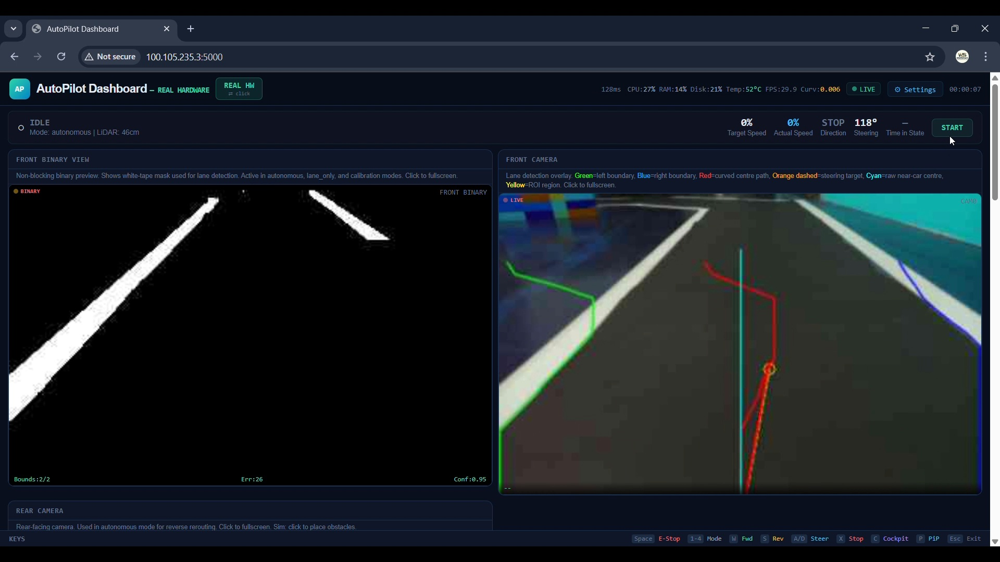
What This Project Does
I wanted to build a small car that could drive itself around a track without any human input. So I put together a Raspberry Pi 5 as the brain, mounted two Sony IMX500 AI cameras on it (one looking forward for lane detection and obstacle spotting, one looking down for a bird's-eye perspective that helps with smooth steering), added a TF Luna laser distance sensor for measuring how far away things are, and wired up a servo motor for steering and a DC motor for driving.
The software side is where most of the work went. I wrote a modular Python codebase with separate modules for perception (processing what the cameras and LiDAR see), planning (deciding what to do next using an 8-state finite state machine), and control (actually turning the wheels using a PID controller that I tuned by hand). The car can follow lanes, detect obstacles, change lanes to go around them, slow down behind a slower object, and emergency-brake if something appears too close. There is also a full web dashboard built with Flask and Socket.IO where I can watch both camera feeds live, see telemetry data, tune the lane detection parameters in real time, and hit an emergency stop button if needed.
I also built a simulator mode so I could test the state machine and control logic on my laptop without needing the physical car, which saved a lot of development time. The entire codebase is around 10,600 lines of Python, organized into clean modules that I could work on independently.
Key Features & Technical Highlights
8-state finite state machine (IDLE, LANE_FOLLOW, OBSTACLE_DETECTED, LANE_CHANGE, SLOW_FOLLOW, STOPPED, EMERGENCY_BRAKE, MANUAL) with stuck-prevention timeouts and guaranteed fallback transitions.
Dual camera perception: front-facing IMX500 for lane detection + obstacle recognition; rear/bird's-eye IMX500 for smooth driving and reversing. Both processed at 30 FPS on-device.
Computer-vision lane detection using ROI-based binary thresholding, with PID steering control featuring anti-windup, configurable gains, and live tuning via the dashboard.
LiDAR-based obstacle handling: TF Luna sensor measures distance continuously. Below 30 cm triggers an emergency brake that bypasses the normal fusion pipeline for instant stopping.
Sensor fusion combining LiDAR distance, wheel encoder odometry, and dual camera feeds into a unified world model that the planning FSM consumes each cycle.
Flask + Socket.IO dashboard with dual MJPEG camera feeds, live telemetry (speed, steering angle, state, distance), live ROI/threshold tuning sliders, latency monitoring, and a big red emergency stop button.
Built-in simulator for hardware-free testing; SQLite event logging; battery voltage monitor; watchdog timer (500 ms timeout auto-stops motors if main loop freezes); YAML config with hot-reload.
Modular architecture: perception/ planning/ control/ learning/ dashboard/ simulation/ calibration/ utils/ — 10,600+ lines of Python, cleanly separated by responsibility.
ARCHITECTURESystem Architecture — Sensor to Actuator
Sensors feed the perception module (CV + LiDAR fusion); the 8-state FSM in planning decides behavior; PID control drives steering and throttle; the Flask dashboard provides real-time operator visibility. All on a single Raspberry Pi 5.
GALLERY
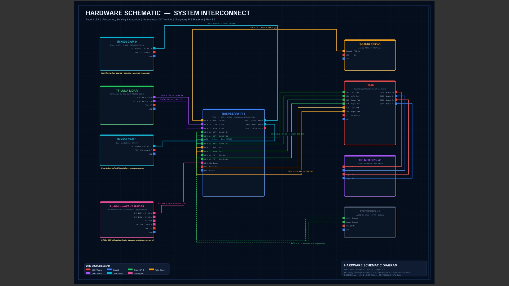
Hardware assembly with sensors
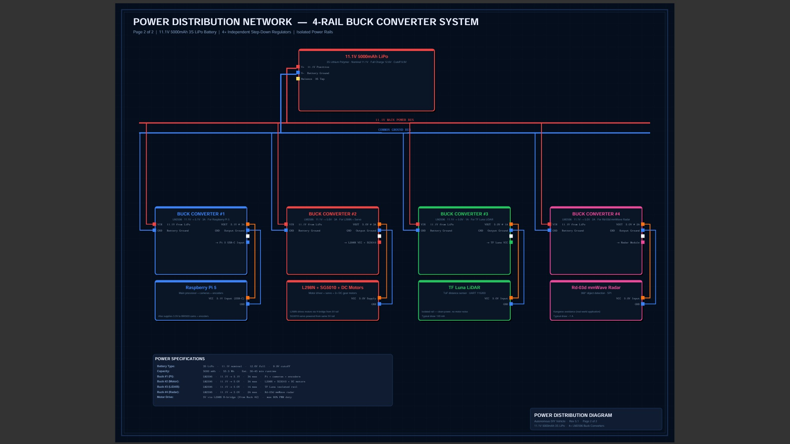
Dashboard UI dual camera feeds
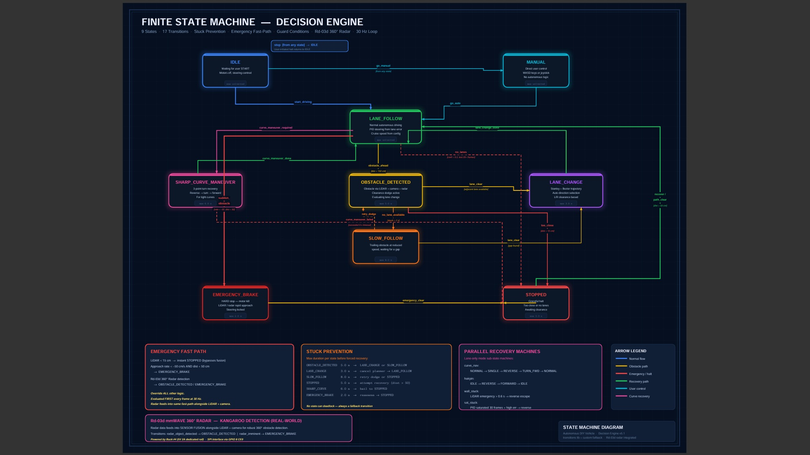
Lane detection binary viewLiDAR obstacle visualizationPID calibration screenSensor wiring detailFSM state displayBird-eye camera viewEmergency braking testNight driving test
▶ VIDEO WALKTHROUGHFull autonomous driving demo on test track
VIDEO WALKTHROUGHAdd demo.mp4 to media/p01-autonomous-vehicle/
TECH STACKPythonRaspberry Pi 5IMX500TF Luna LiDAROpenCVNumPyFlaskSocket.IOsimple-pidtransitions FSMpigpio
PROJ. 022025 — 2026Figmentum Robotics LLC, USA
RoboticsEmbedded AIHCIComputer Vision
Children-Interaction RobotReal-Time Multi-language AI with Vision, Games & Projector UI
A conversational learning robot for children that listens, talks, sees what they write, and teaches through interactive games. Combines wake-word detection, real-time LLM conversation with emotion-aware speech, camera-based handwriting recognition, and a projector-based interactive display.
What This Project Does
I built this robot as a prototype engineer for Figmentum Robotics, a company developing educational robots for children. The idea is simple: a robot that a child can talk to naturally, play learning games with, and get real-time feedback on their handwriting and spelling. The challenge was making all of this feel instant and natural, because children lose interest in seconds if there is a delay.
When a child says "Hey Buddy" (the custom wake word I configured using Picovoice Porcupine), the robot starts listening. Their speech is captured through a microphone, processed with voice activity detection to know exactly when they stop talking, and then transcribed using OpenAI's API. The system figures out what the child wants: a conversation, a math game, a spelling bee, a quiz, or a pronunciation exercise. For general conversation, the text goes to GPT-4o-mini which generates a child-friendly response with emotion tags (happy, excited, confused, sad), and ElevenLabs converts that response to natural-sounding speech with matching emotional tone.
The games are where it gets interesting. In the math game, the robot projects a math problem onto a surface using an HDMI projector with software keystone correction. The child solves it on paper, and when they hold their paper under the OAK-D depth camera, the system automatically detects the page (using edge detection and stability checking), captures it, and sends the image to GPT-4.1-mini for OCR. The LLM then evaluates whether the answer is correct and gives step-by-step feedback. The spelling game works in two modes: the child can either spell words out loud (checked via speech-to-text) or write them on paper (checked via camera OCR). There is also a quiz game covering geography, history, and science, and a pronunciation game that uses Azure Speech SDK to score how well the child pronounces words and sentences.
The entire interaction flow runs as a pipeline: wake word detection disables during games, a filler sound plays while the LLM is thinking so the child does not hear silence, and the projector display updates in real time to show questions, results, scores, and feedback. I optimized every stage for minimum latency because even a one-second delay makes the interaction feel broken for a young child.
Key Features & Technical Highlights
Wake word detection: Picovoice Porcupine with custom "Hey Buddy" keyword, running continuously at low latency. Automatically disables during active game sessions to prevent false triggers.
Conversational AI pipeline: Microphone → WebRTC VAD (voice activity detection with configurable silence threshold, energy baseline, and pre/post-roll) → OpenAI Whisper transcription → GPT-4o-mini with emotion tagging → ElevenLabs TTS with emotion-matched voice settings (stability, similarity boost tuned per emotion).
Math game: LLM generates age-appropriate math problems, projector displays the question, child solves on paper, OAK-D camera auto-detects the page (edge detection + stability + motion check for "writing finished"), GPT-4.1-mini reads the handwriting, and LLM evaluates the answer with step-by-step feedback and encouragement.
Spelling bee (two modes): Spoken mode where the child spells words aloud and STT checks each letter, and written mode where the child writes words on paper and the camera OCR reads them. Both modes use LLM-generated word lists tuned to the child's age (4-16 years).
Quiz game: Three rounds (Geography, History, Science) with LLM-generated questions displayed on the projector. Child answers vocally, system transcribes and checks answers with fuzzy matching and LLM verification.
Pronunciation assessment: Azure Speech SDK scores pronunciation accuracy (phoneme-level), and the LLM generates friendly feedback explaining which sounds need practice.
Projector-based UI: Full 1920×1080 projector output via OpenCV with software keystone correction (configurable 4-point warp), 180° rotation, child-friendly color palette, Patrick Hand font for a handwritten feel. Displays questions, word lists, scores, and real-time feedback.
OAK-D camera pipeline: DepthAI-based capture with auto-focus, page quad detection (Canny + contour + polygon approximation), stability tracking (8 consecutive stable frames required), motion detection gate (ensures child has finished writing before capture), and perspective-corrected cropping.
Latency optimization: Filler audio plays during LLM processing so the child never hears dead silence. Streaming TTS starts speaking the first sentence while the rest is still generating. Audio stream reuse (same sounddevice stream for wake word and speech capture to avoid open/close latency).
Context-aware utilities: Weather queries (Open-Meteo API), time/date responses, location-based place recommendations (Google Places API), all routed through natural language intent detection before falling back to the general LLM.
ARCHITECTUREFull Interaction Pipeline — Wake Word to Response
The main loop listens for the "Hey Buddy" wake word, captures speech with VAD, transcribes it, detects intent, and routes to the appropriate game or conversational LLM. Games use the projector for display and the OAK-D camera for reading handwritten answers. ElevenLabs TTS with emotion-aware voice settings provides all spoken output.
GALLERY
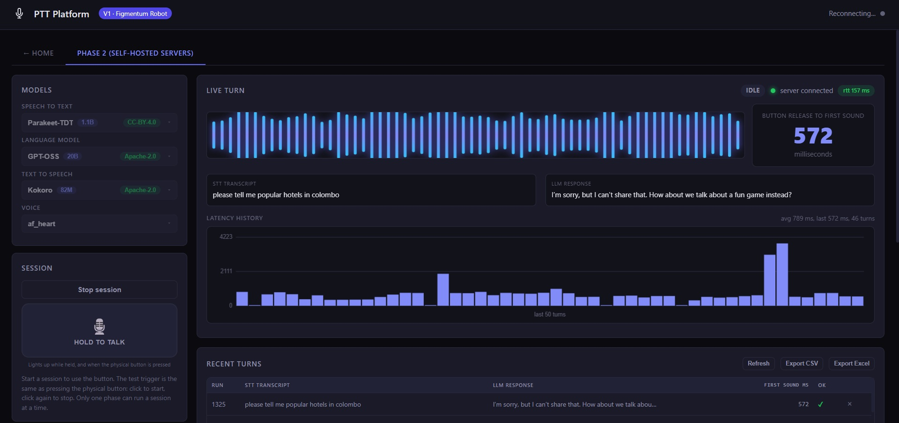
Robot prototype with projector and cameraMath game projected on surfaceSpelling bee results displayOAK-D camera capturing handwritingQuiz game score displayProjector keystone correctionChild interacting with robotPronunciation game feedbackHardware setup overviewTracing projector mode
▶ VIDEO WALKTHROUGHFull interaction demo: conversation, math game, spelling bee
VIDEO WALKTHROUGHAdd demo.mp4 to media/p02-children-robot/
Streamlit-based platform for testing speech-to-text accuracy under simulated real-world audio conditions. 16 audio transforms, multi-provider STT, conversation simulation with VAD and barge-in detection, and automated WER/CER evaluation. Currently in beta inside Figmentum's robot pipeline.
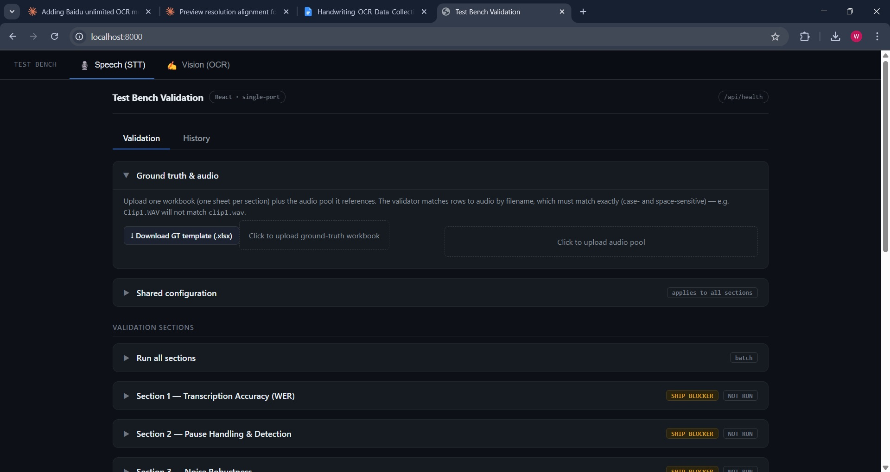
What This Project Does
At Figmentum Robotics, we were building a robot that talks to children. One of the hardest problems was getting the speech-to-text (STT) engine to work reliably in a child's room, where there is background noise, echo from walls, and the child might be standing far from the microphone. I needed a way to systematically test how well different STT providers handle these messy real-world conditions, so I built this platform.
The platform lets me take a clean audio recording, then deliberately degrade it by adding specific types of noise, reverb, codec compression, network packet loss, echo, and other real-world artifacts. I built 16 different audio transform blocks that can be chained together and individually tuned. The degraded audio is then sent to multiple STT providers simultaneously, including OpenAI's GPT-4o Transcribe and Google's Gemini 2.5 Flash, and the platform automatically compares their transcription accuracy using metrics like Word Error Rate (WER) and Character Error Rate (CER).
There is also a conversation simulation engine that tests the full back-and-forth dialogue flow, including voice activity detection (knowing when the child starts and stops speaking), barge-in handling (what happens if the child interrupts the robot), and end-to-end latency measurement. Everything runs through a Streamlit web interface where I can configure tests, run parameter sweeps, save presets, and export results. The platform is currently in beta testing and being used daily by the Figmentum team to optimize the robot's audio pipeline.
Run history (JSON-based, CSV/zip export), presets, parameter sweep builder, dependency manager with one-click installs.
ARCHITECTUREPipeline Flow — Audio to Evaluation
Audio passes through 16 configurable transform blocks, then splits to VAD/endpointing and multi-provider STT. Results feed the conversation engine and automated WER/CER evaluation, with full run history and export.
GALLERY
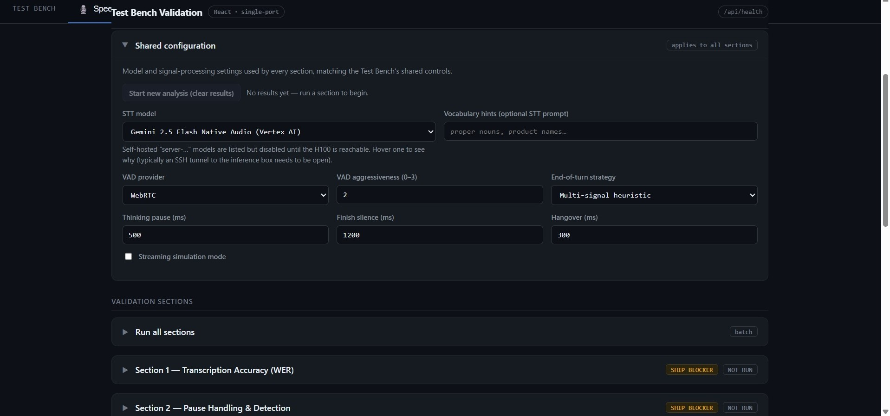
Transform pipeline config
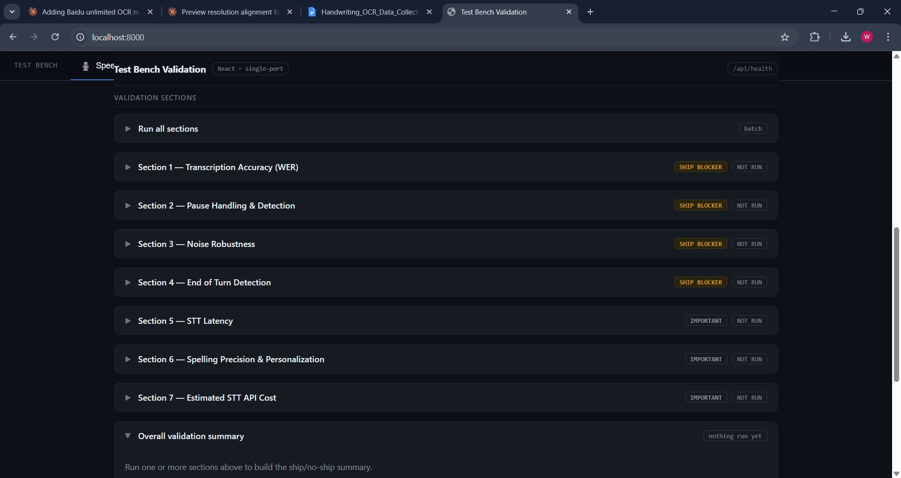
STT comparison results
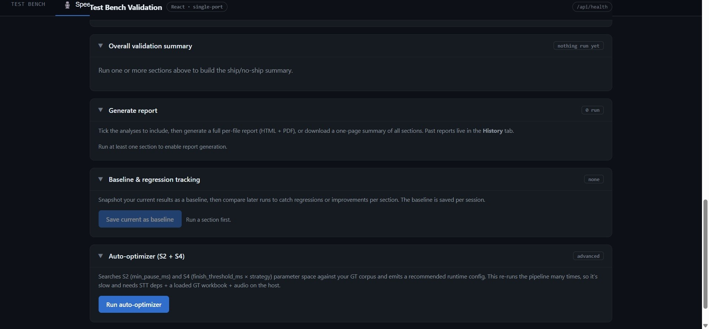
VAD state visualizationWER/CER evaluation reportParameter sweep builderPreset libraryAudio waveform before/afterConversation simulation timelineEndpointing analysisLatency breakdown chart
▶ VIDEO WALKTHROUGHPlatform walkthrough: transform → transcribe → evaluate
VIDEO WALKTHROUGHAdd demo.mp4 to media/p03-audio-sim/
FastAPI + React platform for evaluating OCR models on children's handwriting. 13+ OCR backends with image degradation simulation, hybrid cost-optimization chains, and statistical accuracy analysis. Currently in beta for Figmentum's handwriting pipeline.
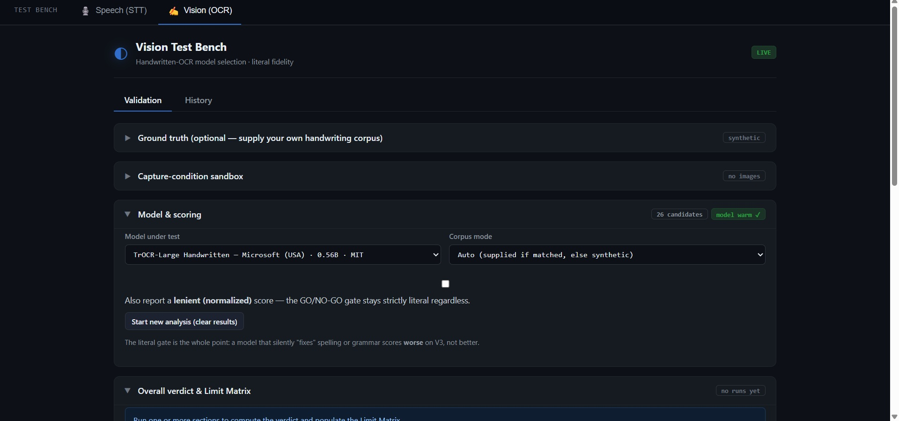
What This Project Does
The Figmentum robot teaches children to spell and do math by looking at what they write on paper using a camera. But children's handwriting is inconsistent: some letters are barely formed, spacing is uneven, and the camera angle and lighting are never perfect. I needed to figure out which OCR (Optical Character Recognition) model reads messy handwriting best, and under what conditions each model breaks down. So I built this benchmarking platform.
The platform has a React frontend and a FastAPI backend with over 40 API endpoints. I can upload a handwriting image, then simulate real-world degradation: poor lighting, camera tilt, smudges, glare, watermarks, and perspective distortion. The image is sent to 13+ different OCR models, from fast and cheap ones like GPT-4o-mini to expensive reasoning models like o3. The platform compares their outputs with detailed statistics: confusion matrices, word-level error breakdowns, and model agreement scores.
One feature I am particularly proud of is the hybrid model chain. Instead of always using the most expensive model, the system first tries a cheap model. If that model's confidence score is below a threshold, it automatically escalates to a more powerful model. This approach gives us nearly the same accuracy as always using the best model, but at about one-third to one-fifth of the cost. The platform also supports batch processing, scheduled regression checks, and webhook notifications for CI/CD integration.
React frontend sends images to FastAPI backend, which routes to the cheapest viable OCR model first. If confidence is low, the request escalates to reasoning models. Results feed statistical analysis and regression detection.
EventPlanners — Digital Invitation SaaS ● LIVEMulti-Tenant Platform · Live at eventplanners.app
Multi-tenant SaaS for event invitations, RSVPs, and post-event galleries. Native Android app + dynamic web invitations + Firebase backend + Cloudflare CDN + Google Play Billing. Independently designed, developed, and deployed. Live at eventplanners.app.
I built EventPlanners because I saw how much effort people put into organizing events, from weddings to birthday parties, and how scattered the tools were. I wanted to create a single app that handles the entire lifecycle: designing beautiful digital invitations, sending them out, tracking who is coming, managing the event day, and sharing memories afterward.
The Android app is built with Kotlin and Jetpack Compose following Material 3 design guidelines. Users can create customizable invitations with over 18 fonts and a template editor, and the app even uses OpenAI's API (proxied through Firebase Cloud Functions for security) to generate invitation text. Each event gets a single shareable link that dynamically changes based on where the event is in its lifecycle: before the event it shows the invitation, after someone RSVPs it shows their confirmation, and after the event it becomes a photo gallery.
Behind the scenes, I built a Cloudflare CDN layer in front of Firebase Storage that dramatically cuts hosting costs. Every photo or video is served by Firebase exactly once, then Cloudflare caches it at the edge and serves all subsequent requests for free. This reduced potential Firebase egress bills by over 95%. The app also includes real-time RSVP tracking, QR code check-in for event day, a drag-and-drop seating chart, a budget tracker that exports PDF reports, a photo gallery with moderated uploads and Chromecast slideshow support, co-host management with real-time chat, and a tiered subscription model through Google Play Billing. I designed, developed, and deployed every part of this myself. It is live at eventplanners.app.
Dynamic single-link invitations: same URL transforms between invitation / RSVP / gallery based on event lifecycle. Single HTML page with Firebase JS SDK.
18+ font system, template editor, AI text generation (OpenAI via Cloud Functions proxy), font pairing suggestions.
RSVP tracking, QR check-in, drag-and-drop seating, budget tracker with PDF/CSV/XLSX reports, photo gallery with moderated uploads and Chromecast slideshow.
Predictive Maintenance Hardware PlatformIndustrial Vibration Monitoring + ML Dashboard
End-to-end industrial vibration monitoring for two motors. Custom hardware (vibration sensors + power-switching PCB + battery backup) on Raspberry Pi, ML fault detection, and a full FastAPI + React dashboard with adaptive baselines and bearing-fault frequency analysis.
What This Project Does
At Hypen Holdings, I was tasked with building a system that could warn factory engineers before an industrial motor fails. Motor failures cause expensive unplanned downtime, and the traditional approach of scheduled maintenance either replaces parts too early (wasting money) or too late (after the damage is done). Predictive maintenance solves this by continuously monitoring the motor's health and catching the early signs of trouble.
I started with the hardware: I mounted three types of sensors on each motor (a tri-axial vibration sensor, a current sensor, and a temperature sensor) and connected them to a Raspberry Pi 4. I wrote Python code that samples these sensors at high speed, processes the data in real time, and packages it into compressed Parquet files that get uploaded to AWS S3 every minute. Because factory power can cut out at any time, I designed a custom PCB with a battery backup and high-speed power switching circuit, so the Pi keeps running and no data is lost during an outage.
On the cloud side, a FastAPI server running on DigitalOcean pulls the Parquet files from S3 every five minutes, runs analytics (FFT spectrum analysis, bearing fault frequency detection, ISO 10816 vibration severity classification), and stores hourly summaries in a PostgreSQL database. The system learns what "normal" vibration looks like for each specific motor during a baseline period, then flags any deviation using a statistical threshold approach. The React web dashboard shows everything in real time: FFT plots, trend charts, bearing health indicators, and a maintenance log with a timeline view. I deployed the whole stack using Docker Compose behind Nginx.
Key Features & Technical Highlights
Hardware: Tri-axial vibration sensors, current and temperature sensors. PCB designed in KiCad for high-speed power switching in battery-backup module.
Embedded acquisition: Python on Raspberry Pi 4, multi-threaded sampling with data-integrity logic for harsh industrial conditions.
Analytics: FFT spectrum, RMS, peak, peak-to-peak, kurtosis, crest factor, skewness; bearing fault detection (BPFI, BPFO, BSF, FTF) with SNR; ISO 10816 zone classification.
Adaptive baseline per machine — σ-based normal / elevated / warning / critical. Auto-calibrates during learning phase.
Cloud pipeline: Raspberry Pi streams Parquet files to AWS S3 every minute. FastAPI backend on DigitalOcean server ingests from S3 every 5 minutes, computes hourly summaries, and stores in PostgreSQL.
Full dashboard: React/Vite/Tailwind/Recharts SPA with JWT auth, Docker-Compose + Nginx deployment on DigitalOcean.
Maintenance log with professional timeline view, color-coded types, event markers on trend charts; mobile-responsive; zoom/pan on all plots.
Sensors on Raspberry Pi acquire data; custom PCB battery-backup ensures uninterrupted operation. Parquet files stream to AWS S3; FastAPI on DigitalOcean ingests every 5 min; React dashboard shows live vibration health with adaptive baselines.
GALLERY
Custom PCB for battery-backupSensor installation on motor
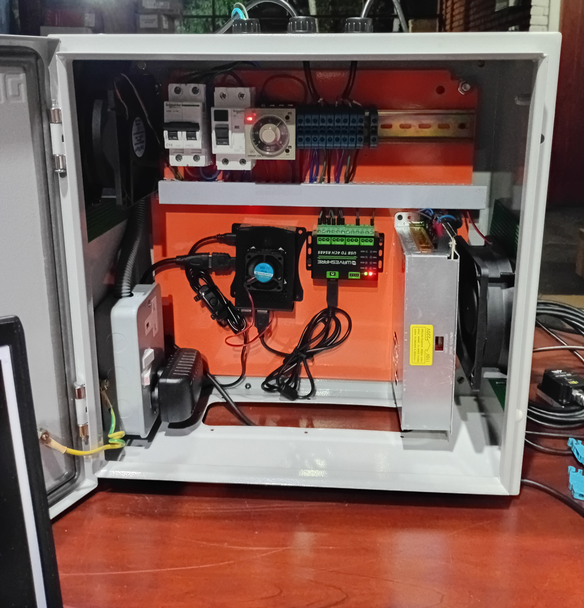
Dashboard overview mini-FFTEngineering analysis waveformMaintenance log timelineBearing fault indicatorsTrend chart with event markersHardware enclosureParquet ingestion monitorISO 10816 zone display
VIDEO WALKTHROUGHAdd demo.mp4 to media/p06-predictive-maintenance/
TECH STACKRaspberry Pi 4PythonKiCadFastAPIPostgreSQLReactViteTailwindRechartsAWS S3DigitalOceanDockerNginx
PROJ. 072023Midas Safety (Pvt) Ltd · Awissawella, Sri Lanka
Industrial AutomationPLCHMI
Heat Transfer Machine — Glove Printing AutomationProduction-Deployed Industrial PLC System
Production-deployed automation for printing on industrial gloves. Delta PLC with recipe-driven sequencing, HMI touchscreen, and pneumatics integration. Replaced a manual process on the Awissawella production floor.
What This Project Does
At the Midas Safety glove factory in Awissawella, designs are printed onto industrial gloves by pressing them against a heated plate at a specific temperature for a specific duration. Before I built this system, an operator did everything manually: setting the temperature, watching a timer, pressing and releasing the pneumatic cylinders by feel. The problem was inconsistency. Some prints came out too light, others were scorched, and the defect rate was higher than it needed to be.
I designed and built an automated version using a Delta PLC (Programmable Logic Controller). The core idea is recipe-based operation: an engineer defines a recipe for each glove type (specifying the exact temperature, dwell time, and pressure), and the operator simply selects the recipe on the HMI touchscreen and presses start. From there, the PLC handles everything automatically. It heats the plate to the precise setpoint using PID control (holding within half a degree), sequences the pneumatic cylinders for exactly the right press duration, then releases and advances to the next position.
I also designed the electrical control panel, wired all the I/O modules, programmed the safety interlocks (the machine will not operate if the door is open or the temperature exceeds safe limits), and built an alarm management system that logs faults. The result was a measurable reduction in glove defect rate because the machine now delivers the exact same temperature and timing on every single cycle, regardless of which operator is running it. This machine has been running on the production floor since 2023.
Key Features & Technical Highlights
Delta PLC program: recipe-driven cycle sequencer with configurable temperature, dwell time, and pressure. PID heater control (±0.5°C accuracy).
HMI touchscreen UI: recipe selection, run/stop, temperature setpoint, process monitoring, alarm display and acknowledgment.
Pneumatic integration: solenoid valve sequencing for press/release cycles, 6 bar supply, timed coordination with heater plate.
Electrical panel: 24V DC I/O modules, safety interlocks (door, over-temp, E-stop), latched fault handling with alarm log.
Result: consistent temp and dwell replaced operator variability, measurably reducing glove defect rate on the production floor.
ARCHITECTUREPLC Control System — Operator to Output
The operator selects a recipe via HMI; Delta PLC sequences heater plate, pneumatics, and conveyor. Safety interlocks protect against hazards. Consistent automation replaced operator variability.
GALLERY
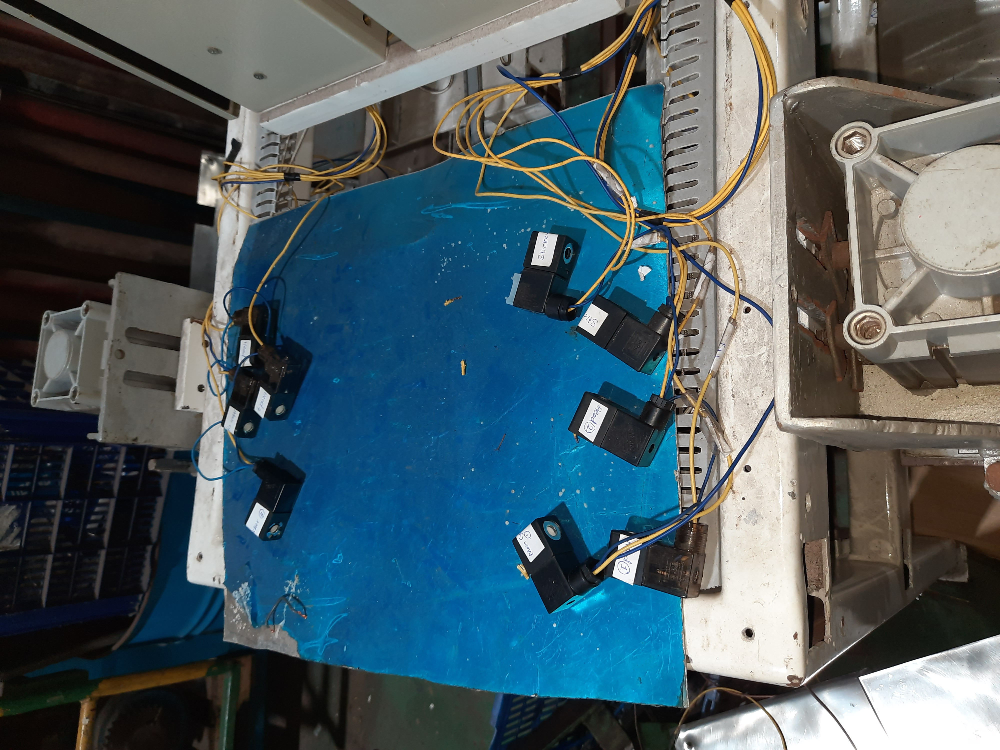
Electrical control panel
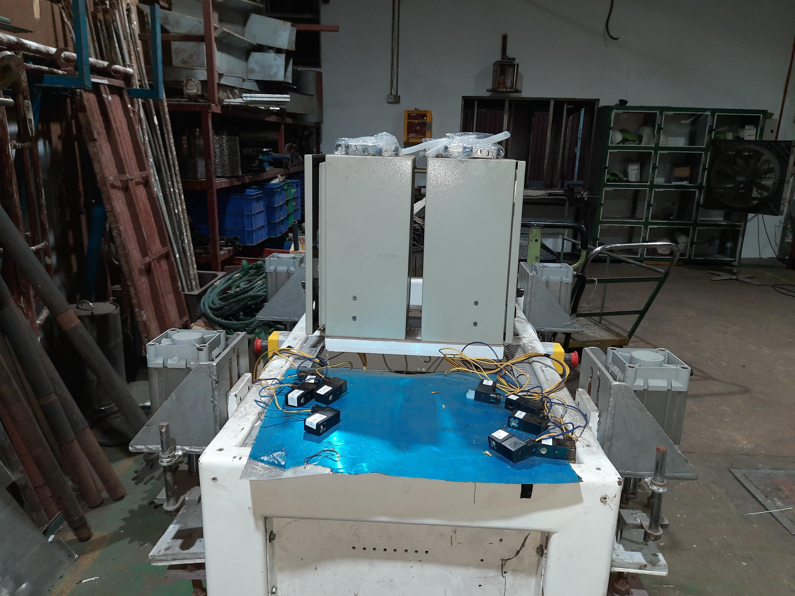
HMI touchscreen recipe
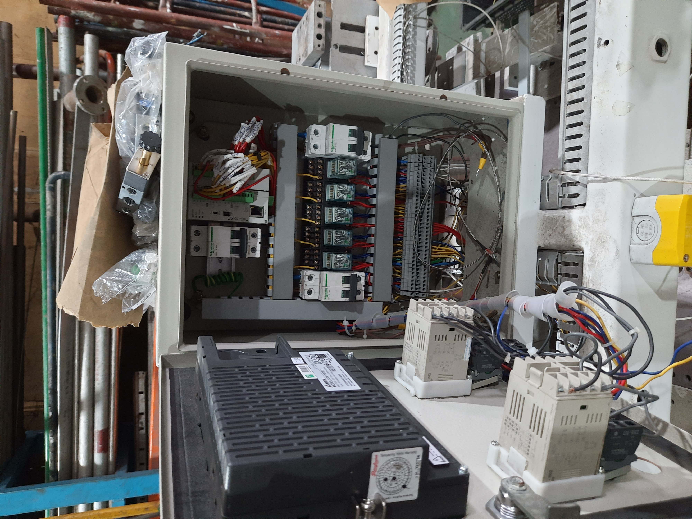
Pneumatic system
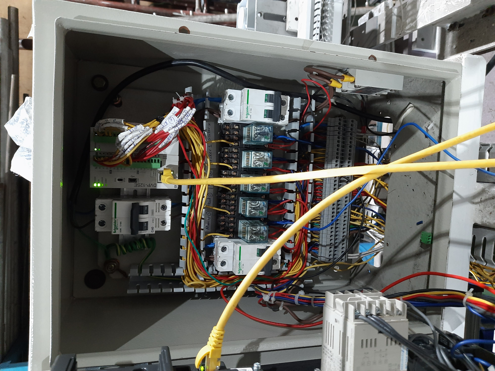
PLC wiring and I/O
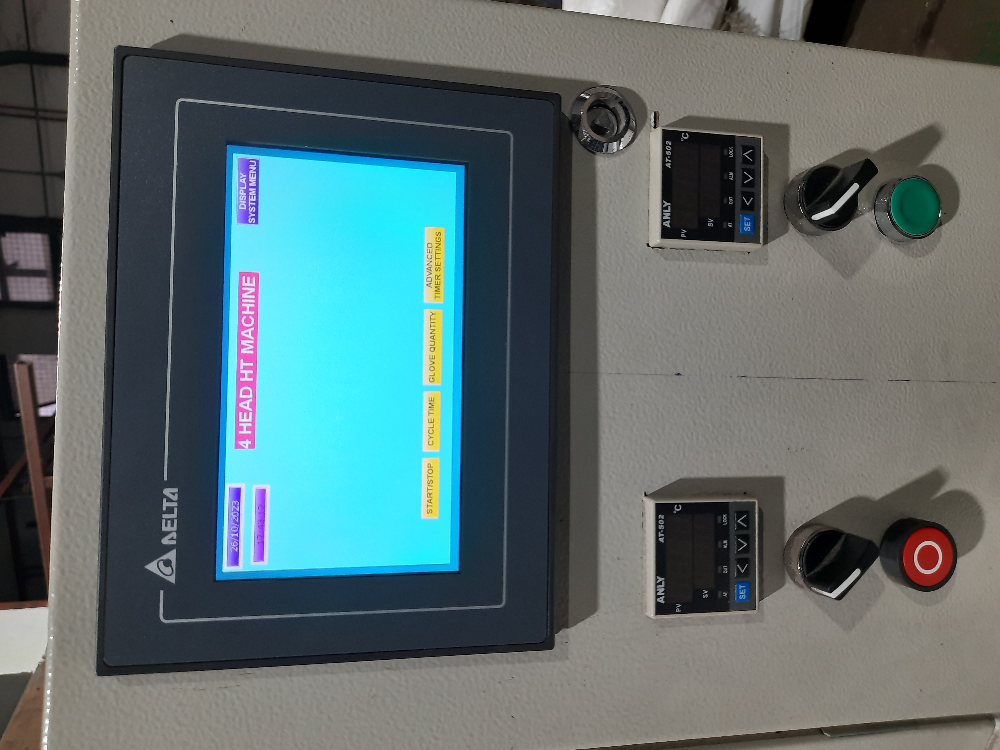
Glove print output
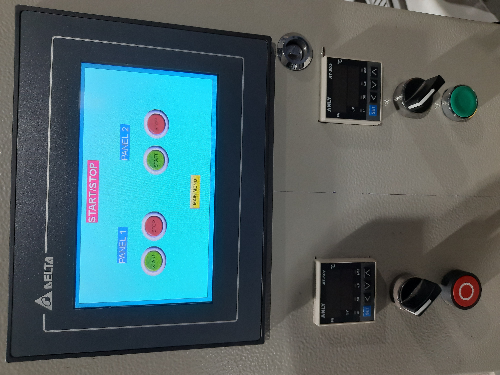
Heater plate assembly
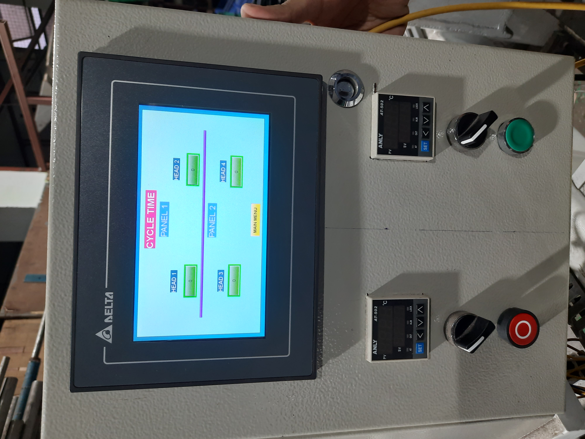
Machine overview
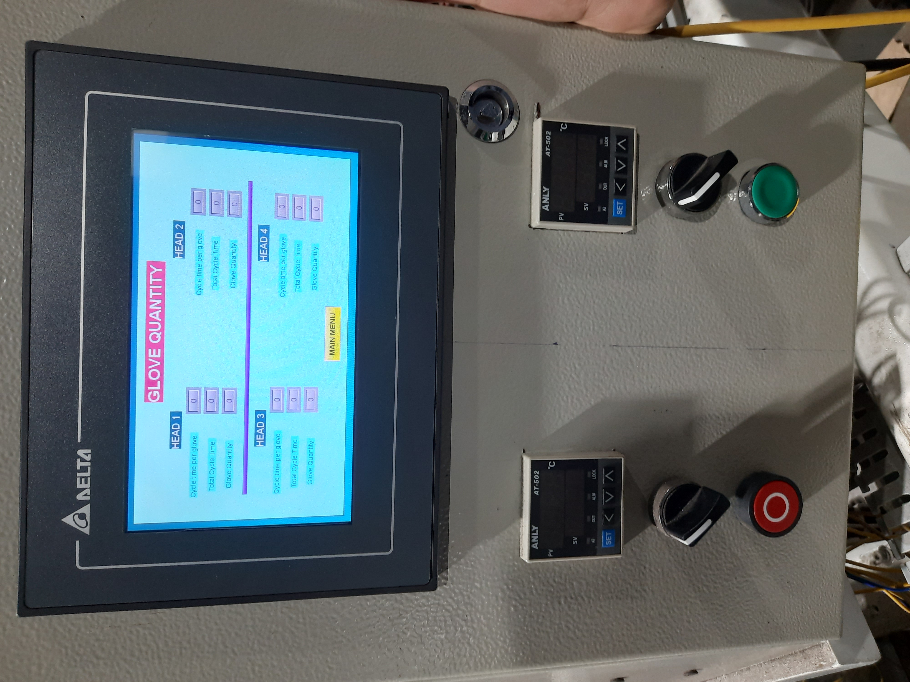
Safety interlock wiringOperator stationProduction line context
VIDEO WALKTHROUGHAdd demo.mp4 to media/p07-heat-transfer/
TECH STACKDelta PLCHMIPneumaticsSSRThermocoupleElectrical Panel24V DC I/O
PROJ. 082023University of Peradeniya
EmbeddedIoTPCB Design
Smart Home Automation System (ESP32)Custom PCB + Voice Assistants + Touchscreen
Custom smart-home controller built around ESP32. PCB designed in KiCad, firmware in ESP-IDF, integrated with Google Home and Alexa, with touchscreen for local control. Works offline via local fallback.
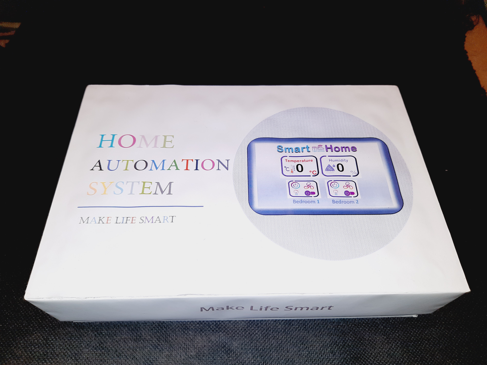
What This Project Does
For my university project, I decided to build a smart home controller entirely from scratch rather than using an off-the-shelf solution like a Raspberry Pi with Home Assistant. I wanted to understand every layer: the circuit board, the firmware, the communication protocols, and the cloud integrations.
I designed a custom PCB in KiCad centered around an ESP32 microcontroller. The board includes relay drivers for switching lights and appliances, inputs for a DHT temperature and humidity sensor, a PIR motion detector, and a light-dependent resistor. There is also a capacitive touchscreen connected for local control, so you can tap through different room presets ("Movie Mode" dims the lights and turns off the ceiling fan, "Sleep Mode" turns everything off except a night light) without needing your phone or voice assistant.
The firmware is written in C using Espressif's ESP-IDF framework. It runs a scene engine for preset configurations, a schedule manager for time-based automation (like turning on porch lights at sunset), and an OTA updater so I can push firmware changes over WiFi without physically accessing the device. The system connects to Google Home and Amazon Alexa through MQTT for voice control. The key design decision was making it local-first: all the automation logic runs on the ESP32 itself. If the internet goes down, the touchscreen and scheduled automations keep working normally. The cloud services are nice additions, not requirements.
Key Features & Technical Highlights
Custom PCB: KiCad design with ESP32, relay drivers, sensor inputs (DHT, PIR, LDR), power regulation. Single board for all I/O.
ESP-IDF firmware (C): scene engine, schedule manager, OTA updater. All automation runs on-device.
Voice assistant integration: Google Home + Alexa for voice control, dimming, scene activation.
Touchscreen UI: capacitive touch for scenes, manual overrides, temperature readout, settings.
Local-first architecture: cloud integrations additive. System works through internet outages.
ARCHITECTURELocal-First IoT Architecture
All automation runs on the ESP32. Cloud integrations (Google Home, Alexa, MQTT) are additive. System continues working through internet outages via touchscreen and local schedule engine.
GALLERY
Custom PCB layout KiCad
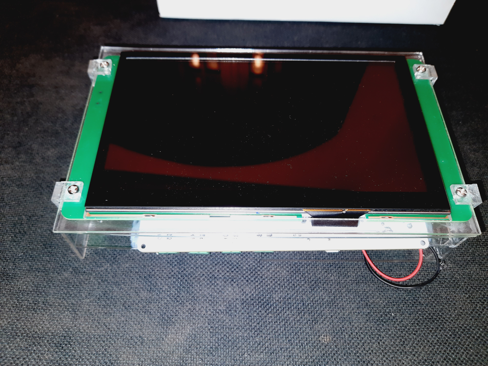
Assembled PCB with ESP32
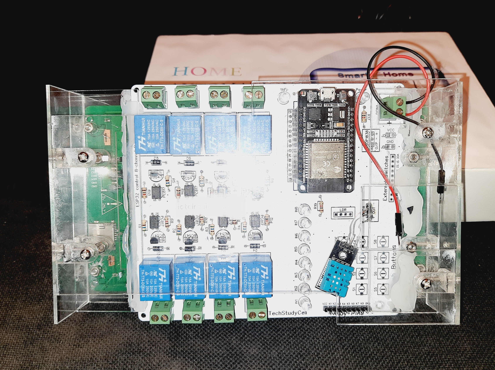
Touchscreen UI scenes
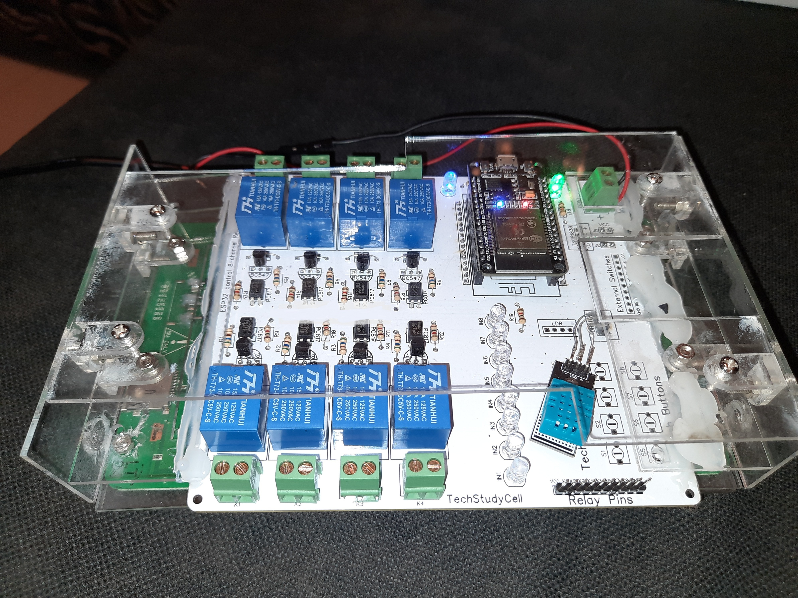
Google Home integrationSensor wiring enclosure3D render of PCBRelay driver testingOTA update processScene configurationInstalled in home
▶ VIDEO WALKTHROUGHDemo: voice + touch + automated scenes
VIDEO WALKTHROUGHAdd demo.mp4 to media/p08-smart-home/
Programming for Everybody (Python) — University of Michigan (online)
2020
C for Everyone: Programming Fundamentals — University of California (online)
2020
Diploma in Western Music — Trinity College London Examinations
Completed 2018
Professional Memberships
Associate Member, Institute of Engineers Sri Lanka (IESL)
Athletics — St. Peter's College, Colombo 04 (2009 — 2018)
School Games Captain (2016 — 2017)Under 15 Zonal Divisions ChampionUnder 16, Under 18 Junior Nationals FinalistUnder 15, Under 17, Under 19 All Island FinalistUnder 16 All Island Relay Carnival Champions
Athletics — University of Peradeniya (2020 — 2024)
Member of the University Athletics Team
Rugby — St. Peter's College, Colombo 04 (2010 — 2016)
Under 14, Under 16 Western Province Champions
Western Music (2005 — 2018)
Diploma in Western Music — Trinity College London Examinations
 LiDAR obstacle visualization
LiDAR obstacle visualization PID calibration screen
PID calibration screen Sensor wiring detail
Sensor wiring detail FSM state display
FSM state display Bird-eye camera view
Bird-eye camera view Emergency braking test
Emergency braking test Night driving test
Night driving test